앱을 깔아야만 참여할 수 있었습니다.
웹으로 바꿔, 부스의 QR을 찍으면 바로 미션이 열리게 했습니다. 설치 단계 하나가 사라지자 현장에서 바로 시작합니다.
About
홈페이지와 업무 시스템을 기획, 디자인, 구현, 운영까지 한 사람이 맡아 왔습니다. AI 코딩 도구로 빠르게 만들고, 운영 데이터로 검증합니다.
Case 01 · EarthMera · New York · 2025
참가부터 현장 운영까지 연결하는 이벤트 플랫폼입니다. 환경 단체 플로깅에서 시작해 ZRN 파티 PoC를 거쳐 UKIS 2025에 첫 상용 납품했습니다.

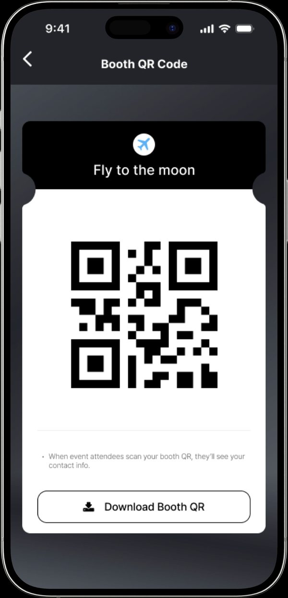
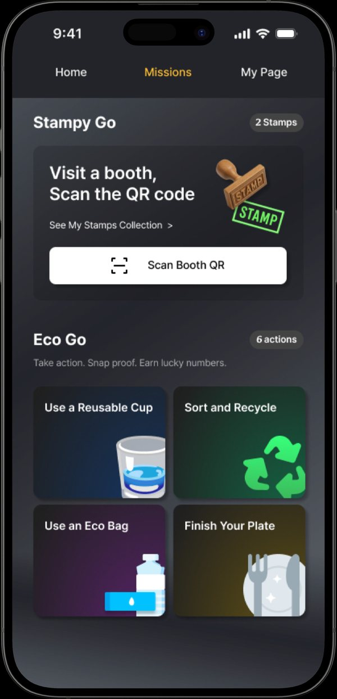
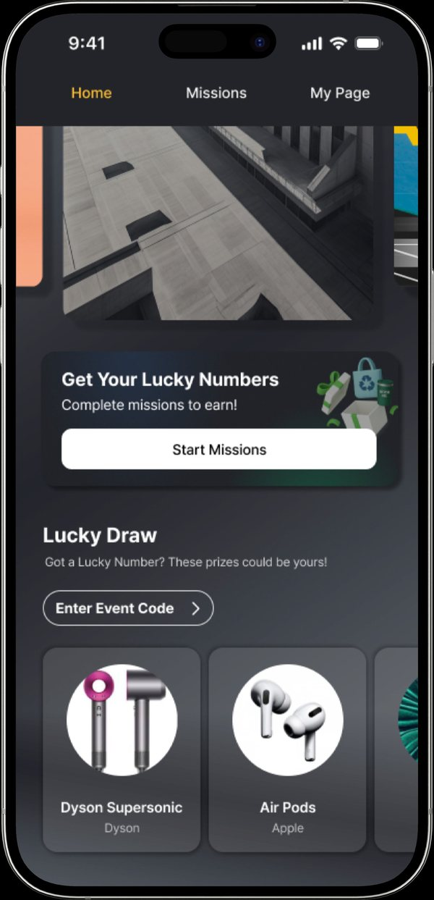
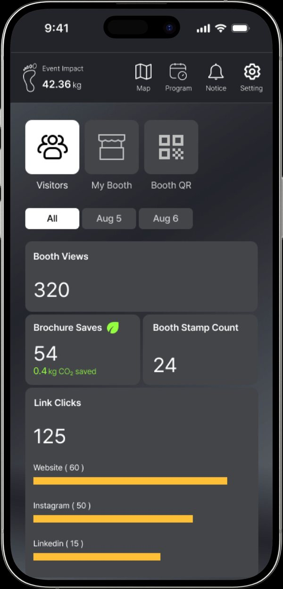
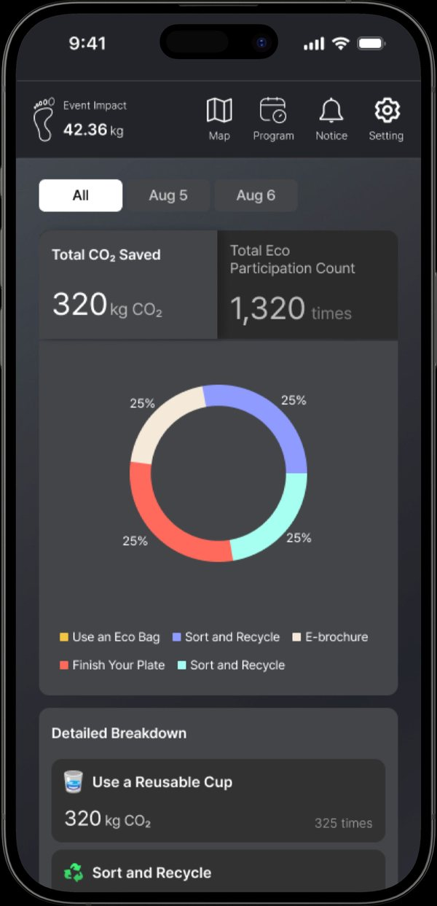

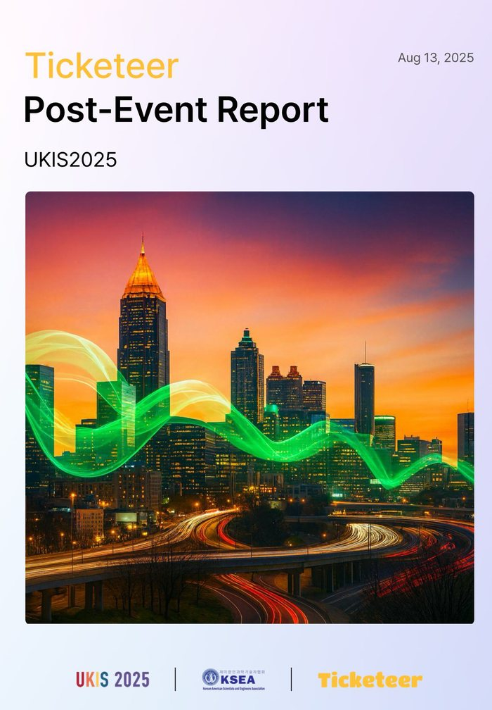
웹으로 바꿔, 부스의 QR을 찍으면 바로 미션이 열리게 했습니다. 설치 단계 하나가 사라지자 현장에서 바로 시작합니다.
미션 탭을 따로 빼고 버튼을 키웠습니다. 홈에서는 경품을 먼저 보여 줍니다. 보상이 보여야 사람이 움직입니다.
참가자는 미션과 럭키드로우, 부스 관리자는 QR 스탬프와 방문자 그래프, 주최자는 실시간 공지와 추첨을 봅니다. 역할마다 목표가 달라 처음부터 따로 설계했습니다.
500명, 21개 부스 행사에서 미션 완료율 90%를 기록했습니다. PoC 대비 참여율은 3배가 됐고, 행사 뒤 Post-Event Report를 납품했습니다.
Case 02 · 클라이언트 · 2026
월 8천만 원대 매출을 다루는 반려가전 제조·판매사의 경영 대시보드입니다. 설계부터 구현, 실제 운영까지 맡았습니다.
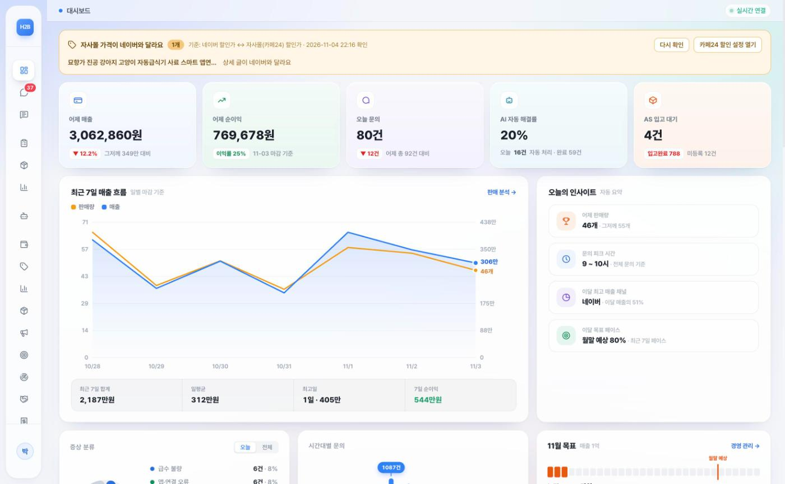
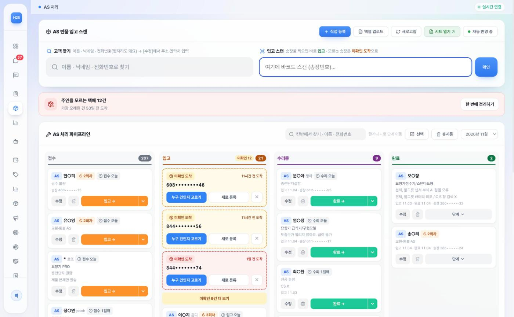

KPI 증감 칩과 트렌드 차트를 먼저 놓아, 오늘 무엇이 달라졌는지가 첫 화면에서 보이게 했습니다.
AI가 1차로 답하고, 판단이 필요한 문의와 AS는 상담사와 칸반으로 넘어갑니다. 입고 스캔부터 출고까지 한 흐름입니다.
색각이상(CVD)을 검증한 팔레트로 매출과 순이익 그래프를 그렸습니다. 원가와 수수료를 반영한 순이익까지 바로 계산합니다.
DB 인덱스 원인을 찾아 대시보드 응답을 25초에서 1.4초로 줄였고, 재고 화면은 저장본을 먼저 보여 바로 열리게 했습니다.
Case 03 · 사업 기획 · 2026
직접 운영한 유료 PoC 3건을 공통 기능 3종과 선택 모듈 5종으로 묶은 사업 기획입니다. 사업계획서와 브랜드, 제품 사이트까지 직접 만들었습니다.
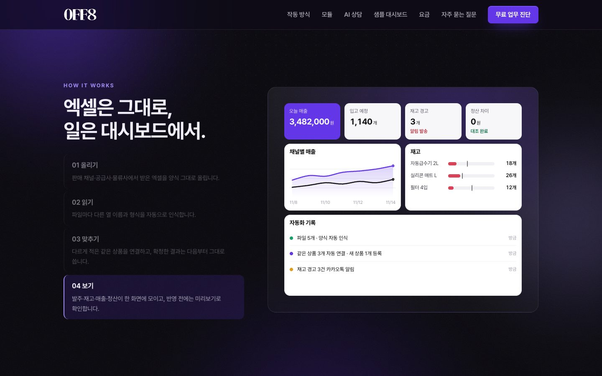
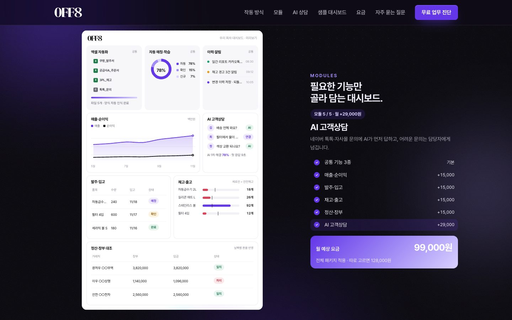
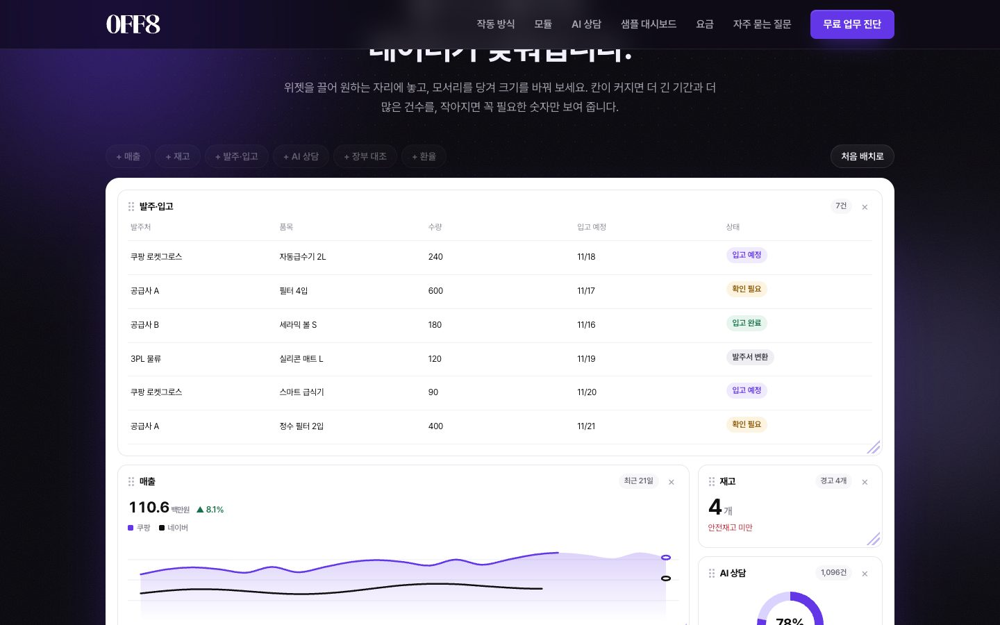
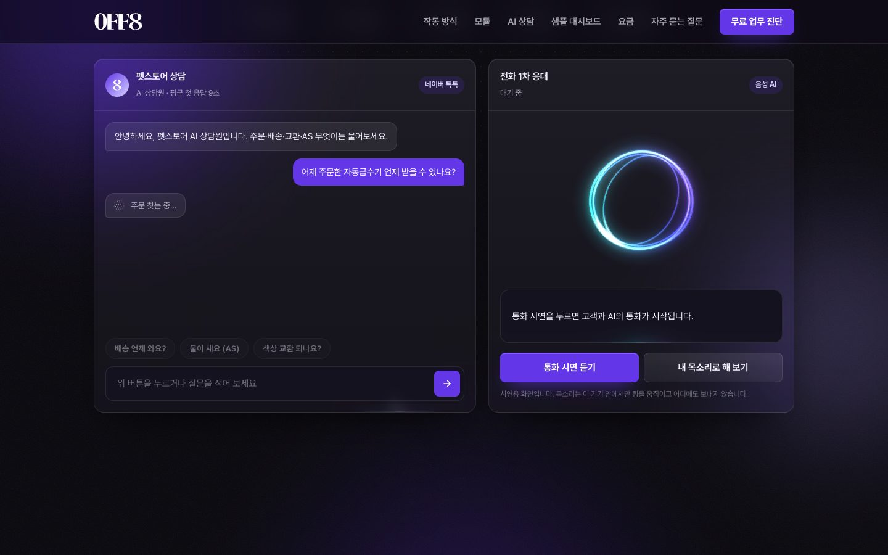
판매 채널, 공급사, 물류사마다 양식이 달라 같은 상품을 매번 손으로 맞췄습니다. 엑셀은 그대로 두고, 올리면 대시보드가 되게 설계했습니다.
엑셀 자동화·자동 매칭·이력 알림은 기본으로 두고, 발주·재고·매출·정산·AI 상담 중 필요한 것만 더합니다. 월 39,000원부터 시작합니다.
위젯 크기에 따라 기간과 건수가 늘고 줄어, 고객사마다 원하는 대로 꾸민 대시보드를 씁니다.
상품 자동 매칭 78%, 월간 리포트 85초에서 4초, 누적 상담 2,557건을 세 고객사의 실제 업무에서 확인했습니다.
More Work

쿠팡 발주서와 공급사 주문서의 같은 상품을 신뢰도 5단계로 맞춥니다.
98% 자동 매칭
전 페이지를 다시 설계하고 회원·장바구니·네이버페이·상담 위젯까지 연결했습니다.
375px 부터 설계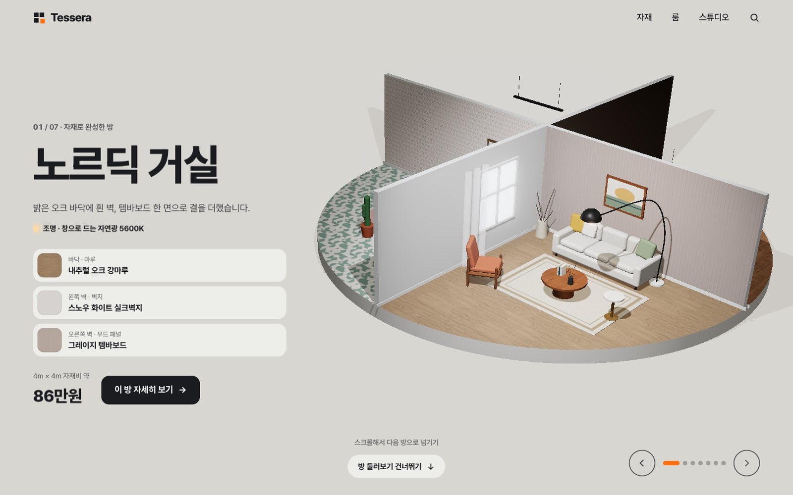
3D 방에서 마루·타일·벽지를 바꿔 보고 평수별 견적까지 계산합니다.
34종 자재
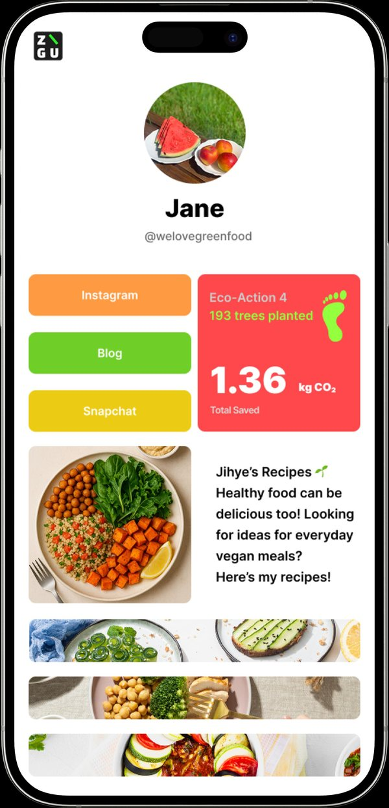

위젯 선택 → 배치 → 편집 → 완성, 4단계 온보딩으로 자유도와 쉬움을 함께 잡았습니다.
+100 구독 가입

숏폼 피드를 토론 포럼으로 바꿔, 보기만 하던 커뮤니티를 말하는 커뮤니티로 만들었습니다.
+1,000 신규 가입Numbers
How I Work
Operation
AI와 함께 설계·구현하고, 실제 운영 중 생긴 장애의 원인을 찾아 고쳤습니다.
2026 — 현재 프리랜서 · 업무 자동화 · AI 활용 구현
2024 — 2025 EarthMera, New York · Lead Product Designer
2023.07 — 2025.05 SUNY Schenectady Community College · Computer Information Systems
Figma · Product Strategy · UX Research · Design System · Claude Code · FastAPI · PostgreSQL · Cafe24